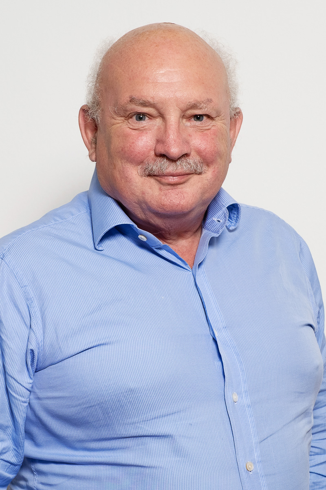

Peter Botten
Executive Chairman
- Extensive worldwide experience in the oil and gas industry, having held various senior technical, managerial and board positions in a number of listed and government-owned bodies.
- Previously Chairman of AGL, Australia's largest energy retailer, and former Managing Director of Oil Search Limited, overseeing its development into a major ASX-listed company from 1994 until 2020.
- Current directorships include Karoon Energy Limited (ASX: KAR) and Aurelia Minerals Limited (ASX: AMI); Council Member of the Australia PNG Business Council; and Chairman of the Oil Search Foundation, the Hela Provincial Health Authority and the National Football Stadium Trust in Papua New Guinea.